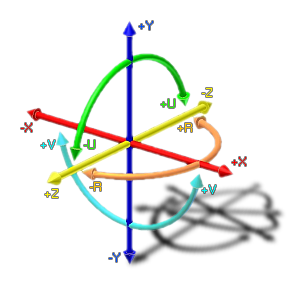

joystick_xpos(id);
| Argument | Description |
|---|---|
| id | The id of the joystick (1 or 2). |
Returns: Real
This function will return the position of the x-axis of the
joystick/gamepad with the given id, with the value being somewhere
between -1 and 1. See the image below for the relationship between
the different axes of rotation that are accepted. The id can be
either 1 or 2 as GameMaker: Studio only accepts input from a
maximum of two joysticks/gamepads.
NOTE: This function is only available for
Windows.

xx += spd * joystick_xpos(1);
The above code uses the returned value of the joystick_xpos function to set a variable within the instance.